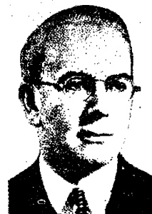

The most famous sermon ever preached, read in 1934 not as a list of moral demands but as a how-to: change what you think, and you change your life. It became the textbook early Alcoholics Anonymous handed out before it had one of its own.
A distillation /the Sermon, re-read/11 sources/ 16 min read
In the years before Alcoholics Anonymous had a book of its own, the book it pressed on new members was about the Sermon on the Mount. In Akron, a man fresh off a drunk would get handed a copy almost before he could sit up. One old-timer remembered it as required reading for everybody: as soon as the men in the hospital "could begin to focus their eyes, they got a copy."
It was not a Bible, and it was not really about being good. It was a 1934 self-help book by a former electrical engineer named Emmet Fox, and its claim was a strange one. The most famous sermon ever preached, the one with the meek and the salt of the earth and turning the other cheek, is not a list of moral demands at all. It is a practical manual for changing your life, and the change happens in your head.
Fox read the whole thing as instructions. Not "here is how a good person behaves," but "here is how thought works, and here is how to use it." Get your thinking right, he said, and the rest of your life reorganizes itself to match. He meant that literally.
The sermon Fox was talking about, in Carl Bloch's painting of it, 1877. A man on a rock, one hand up, a few hundred people listening. Fox's book is a line-by-line rereading of what was said there.
Fox himself was an unlikely preacher. Born in Ireland in 1886 and trained as an electrical engineer, he fell in with a movement called New Thought and turned out to have a gift for filling rooms. By the 1930s he was the most popular spiritual speaker in America, drawing as many as 5,500 people a week to the New York Hippodrome, then moving the whole crowd to Carnegie Hall when he outgrew it. He never had a church building. He had an auditorium.

Emmet Fox, 1944. (Divine Science News, public domain.)
What follows is his reading, distilled: the one idea underneath all of it, the three famous passages he turned inside out, the one-line method he is still known for, and then the harder part, where this kind of thinking goes when you push it too far, and what is left standing when you do.
The one idea
Change your thinking, change your life
Fox belonged to New Thought, an American movement built on one load-bearing claim: your thoughts cause your life, not the other way around. It began in the 1860s with a Maine clockmaker named Phineas Quimby, who decided that illness starts in the mind, and by Fox's day it had grown into a loose family of churches all teaching some version of one slogan. Change your thinking and you change your life.
Set that idea against the Sermon on the Mount and the famous lines start to move. "The kingdom of heaven is within you" stops being a promise about the afterlife. Fox reads it as a flat description of where your life is actually decided.
Man is the ruler of a kingdom ... That kingdom is nothing less than the world of his own life and experience.The Sermon on the Mount, ch. 5
Your circumstances, in this reading, are the printout of your habitual thinking. Fox does not hedge it.
the whole of our life's experience is but the outer expression of inner thought.ch. 1
Which lands him on a line that reads as either liberating or unhinged, depending on the morning. You do not get to choose your circumstances, he says, but you do get to choose your thoughts, and that turns out to be the only choice that finally matters.
We have free will, but our free will lies in our choice of thought.ch. 1
To Fox this was not a clever angle on the sermon. He thought it was the actual subject of the whole Bible, hiding in plain sight. People read it as a record of other men's lives. He read it as the operating manual for your own.
The Bible is really a textbook of metaphysics, a manual for the growth of the soul.ch. 2
The re-reading
Three famous lines, turned inside out
This is where the book earns its keep. Take the most quoted parts of the sermon, the ones that have hardened into Sunday-school furniture, and Fox pries each one open as a piece of practical psychology. Three of them carry the whole method. Flip through them.
tap a passage, or use the arrow keys
Re-reading one
The Beatitudes are not rewards. They are states of mind.
Read straight, the Beatitudes ("Blessed are the poor in spirit," "Blessed are the meek") sound like a list of nice-guy virtues that pay out later, in heaven. Fox says they are not promises about the future. Each one names a state of mind you can be in right now, and the "blessing" is just what that state does for you.
"Poor in spirit" has nothing to do with being timid or broke. It means emptied out: free of your fixed opinions and your need to run everything, so something new can actually get in. "Meek" is his favorite catch. It is not the doormat the word suggests today; it is his word for being teachable, open, willing to be surprised by your own life. And "inherit the earth" is not real estate. "Earth," he says, means your outer circumstances, so the teachable person is the one who ends up with command of their own experience.
To be poor in spirit means to have emptied yourself of all desire to exercise personal self-will, and ... to have renounced all preconceived opinions in the wholehearted search for God.
The Sermon on the Mount (1934), ch. 2, "The Beatitudes."
Re-reading two
"Resist not evil" is not weakness. It is strategy.
"Resist not evil ... whosoever shall smite thee on thy right cheek, turn to him the other also." On its face this is the most self-defeating line in the sermon: lie down, let the world roll over you. Fox calls it instead "the great metaphysical secret," and reads it as a rule about attention.
Whatever you fight, you feed. Argue with a problem, brood on it, brace against it, and you have handed it your time and your fear, which is to say your power. Stop resisting it in your mind, stop giving it the spotlight, and it begins to lose its grip. "Turning the other cheek," in this reading, is the inner move of dropping the angry thought and putting the one you would rather live from in its place.
Antagonize any situation, and you give it power against yourself; offer mental nonresistance, and it crumbles away in front of you.
ch. 4, "Resist Not Evil."
Re-reading three
The Lord's Prayer is a machine, built to be run.
Almost everyone treats the Lord's Prayer as words you recite. Fox treats it as a device you operate. Jesus, he argues, engineered it on purpose: seven short clauses in a deliberate order, a "compact formula" that works on the person praying it the way a course of treatment works on a patient.
So "Our Father" is not a greeting; it is a setting that fixes who you are, a child of God rather than a subject of one. "Give us this day our daily bread" is not about food; "bread," he says, is the felt presence of God, an actual experience in your consciousness and not a theory about it. Say it by rote and you get nothing. Work it as a procedure, he promises, and it reliably changes you.
The Great Prayer is a compact formula for the development of the soul ... those who use it regularly, with understanding, will experience a real change of soul.
the appended section, "The Lord's Prayer."
The method
The Golden Key
Three years before the book, Fox had already boiled the whole thing down to a single move and printed it as a six-page pamphlet. It is the most famous thing he ever wrote, and people still pass it around. He called it the Golden Key, and he opened with a promise that should have gotten him laughed out of the room.
Scientific Prayer will enable you, sooner or later, to get yourself, or anyone else, out of any difficulty on the face of the earth. It is the Golden Key to harmony and happiness.The Golden Key, 1931
He knew how it sounded. To anyone new to what he called "the mightiest power in existence," he admitted, the promise "may appear to be a rash claim," but he was sure it needed "only a fair trial" to prove out. The method itself he promised was "simplicity itself." It is.
Stop thinking about the difficulty, whatever it is, and think about God instead. ... This is the complete rule, and if only you will do this, the trouble, whatever it is, will presently disappear.The Golden Key
The Golden Key, in four moves
Stop thinking about the problem.
The instant you catch your mind circling the difficulty, drop it. That is the whole hard part.
Think about God instead.
Fill the space with anything you can hold onto about God: life, love, goodness. The content matters less than the swap.
Do not peek.
"To be continually glancing over your shoulder ... is fatal, because that is thinking of the trouble, and you must think of God, and of nothing else."
Do not script the ending.
"Do not try to think out in advance what the solution of your difficulty will probably turn out to be." Wanting out is enough.
Strip the theology out and there is a real technique in here. Deliberately dropping a worry and steering your attention somewhere else is something therapists actually teach now, under duller names. And Fox pitched it as an experiment, not a creed, which is exactly why it traveled so well.
all that is absolutely essential is to have an open mind, and sufficient Faith to try the experiment. Apart from that, you may hold any views on religion, or none.The Golden Key
The honest part
Where this goes wrong
A claim this big does not stay politely inside a 1934 self-help book. Follow "your thoughts make your reality" forward a few decades and you arrive somewhere a lot of people will recognize.
The thesis, pushed all the way
If thought is the cause of everything, you can think your way to anything: health, money, a parking space. That exact promise became one of the best-selling books of the century. Rhonda Byrne's The Secret (2006) sold around 30 million copies on the "law of attraction," the idea that picturing what you want pulls it toward you. Byrne has said the book that set her off was Wallace Wattles's 1910 New Thought tract, The Science of Getting Rich. It is the same engine as Fox, with the brakes taken off.
The bill it runs up
There is no evidence that thoughts move matter, and carried to the end the idea turns cruel. If your mind makes your world, then your illness, your poverty, and your grief are things you did to yourself by thinking wrong. Barbara Ehrenreich, after a breast-cancer diagnosis, wrote a whole book (Bright-Sided in the US, Smile or Die in Britain) tracing that guilt machine straight back to New Thought. The death rate from breast cancer barely moved for decades, she noted, yet the culture still orders the sick to stay upbeat, and quietly blames them when it does not save them.
So is it all nonsense? No, and this is the part worth slowing down for. Buried inside the overreach is something real, and it is not woo.
The kernel that survives is this: your thoughts genuinely shape your feelings and a good deal of your behavior. Catch a downward spiral, change what you are paying attention to, and the day really does go differently. That is the premise underneath cognitive behavioral therapy, the most evidence-backed talk therapy there is.
Keep: your thoughts shape your mood and your actions. Notice a spiral, change the channel, and you change the day. This is the spine of modern therapy, and it works.
Keep: the Golden Key as an attention tool. Dropping a worry and deliberately filling the gap is a real, usable move, God optional.
Drop: the idea that thought moves matter. You cannot picture a tumor away or a paycheck in, and a book that says you can is just arranging the blame for when it fails.
The thread
How it became AA's first textbook
Which brings us back to the drunks. Before Alcoholics Anonymous wrote its own book in 1939, it needed something to put in people's hands, and for the Akron group the main thing it reached for was Fox.
Dr. Bob, AA's co-founder, kept the book close and handed it out as fast as new men could read it. It sat alongside two other small books as the unofficial curriculum of early sobriety. In New York, members would file out of a meeting and walk over to Steinway Hall to catch Fox lecture in person. Mel B., the AA historian who studied this most carefully, called The Sermon on the Mount "one of the society's most useful guides until the publication of Alcoholics Anonymous in 1939."
It is not hard to see why it fit. AA had to build a spiritual program for people who had been burned by religion, or who wanted nothing to do with it. Fox's God was already the broad, no-creed-required kind. In the Golden Key he had told readers they could hold "any views on religion, or none" and simply run the experiment. That is nearly the same door AA would open with its most quoted phrase, "God as we understood Him."
The truer story is less tidy and more interesting. Fox, New Thought, and AA were all drinking from the same stream: a hopeful, do-it-yourself, experience-over-doctrine strain of American spirituality that was simply in the air in the 1930s. Fox did not father AA. He wrote the clearest paperback version of the mood AA was already in, so his was the book that happened to be lying around when the drunks needed one.
That is the company this book keeps on the shelf. Viktor Frankl, working alone in a camp, decided the one freedom nobody can take from you is how you meet what happens (see Man's Search for Meaning). The Spirituality of Imperfection finds the same turn across a dozen traditions. Fox is the mind-power edition, louder where they are careful and sometimes wrong where they are honest, but pointing at the same small, durable fact. If you want the full story of the drunks themselves, it is here.
The fine print
Sources, and a note on the quotes
This is a distillation of one book, told in my own words; the ideas and the quoted lines are Fox's. The Sermon on the Mount is still in copyright, so quotes are kept short and reproduced for study and comment, located by chapter (page numbers drift between the dozens of reprints). A couple of the quoted lines use an em dash in the original; the site does not, so they appear here with a comma instead, with no change to the words. Where a famous Fox phrase actually comes from a different one of his books, I have said so rather than put it in the wrong mouth.
The full list, 11 sources
Emmet Fox.The Sermon on the Mount: The Key to Success in Life. Harper & Brothers, 1934 (quoted here from the Grosset & Dunlap reprint, which appends his section on the Lord's Prayer). The source for the thesis (ch. 1, "What Did Jesus Teach?"), the Beatitudes (ch. 2), thought as cause (ch. 3, "As a Man Thinketh"), non-resistance (ch. 4, "Resist Not Evil"), the kingdom (ch. 5, "Treasure in Heaven"), and the Lord's Prayer section. archive.org
Emmet Fox.The Golden Key (pamphlet, 1931). The method, the "rash claim," and the "any views on religion, or none" line. The original opens "Scientific Prayer"; some web reprints drop the first word. emmetfox.org
A note on misattribution. Two phrases everyone hangs on Fox, "Life is consciousness" and "thoughts are things," are genuinely his but come from Power Through Constructive Thinking (1932), not this book, so they are not quoted above. The popular "heaven and hell are states of mind" line is from that book too; in its place I used the Sermon's own wording, "ruler of a kingdom ... the world of his own life and experience."
New Thought, and the lineage. Quimby as the 1860s root, Emma Curtis Hopkins as the teacher of teachers, Unity and Divine Science as branches, and why Christian Science is the walled-off cousin rather than a member. New Thought · Divine Science
Fox, the man. Born 1886 in Cobh, Ireland; electrical engineer; up to 5,500 a week at the New York Hippodrome until 1938, then Carnegie Hall; minister of the Divine Science Church of the Healing Christ; died 1951 in Paris. (The "largest congregation in America" superlative is a traditional claim, not an audited count, so I have given the sourced figure instead.) Emmet Fox
The line to The Secret. Wallace Wattles, The Science of Getting Rich (1910); Rhonda Byrne, The Secret (2006), which credits Wattles and has sold roughly 30 million copies. (Napoleon Hill and Norman Vincent Peale sit in the same lineage by theme, not by a documented handoff.) The Secret · Wattles
The critique. Barbara Ehrenreich, Bright-Sided (US) / Smile or Die (UK), 2009, which traces compulsory positivity to New Thought and grew out of her own breast-cancer diagnosis. interview
The real kernel. The "thoughts shape feelings" idea is the premise of cognitive behavioral therapy: Albert Ellis (REBT, 1955) and Aaron Beck (cognitive therapy, 1960s). Its true ancestor is the Stoic Epictetus, not Fox; CBT and New Thought are parallel branches off that root, and CBT is the one with the evidence. CBT
Fox in early AA. "Required reading for everybody ... as soon as the men in the hospital could begin to focus their eyes, they got a copy": Dr. Bob and the Good Oldtimers (AA World Services, 1980), pp. 150 to 151.
The historian's verdict. The Steinway Hall detail and the "one of the society's most useful guides until the publication of Alcoholics Anonymous in 1939" line: Mel B., New Wine: The Spiritual Roots of the Twelve Step Miracle (Hazelden, 1991), the standard study of New Thought's influence on AA.
The images. Carl Heinrich Bloch, The Sermon on the Mount, 1877 (Frederiksborg Palace), public domain, via Wikimedia Commons, cropped for the card. Portrait of Emmet Fox, Divine Science News, 1944, public domain (US copyright not renewed), via Wikimedia Commons.
{kind=link}
{kind=link}